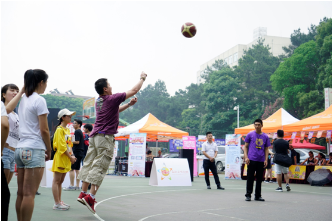
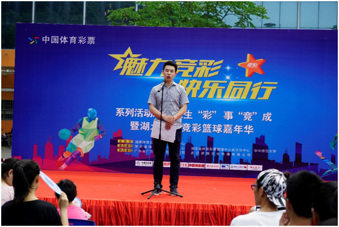

天生有彩事竞成 魅力竞彩高校行
——2017“魅力竞彩，快乐同行”走进武汉华中师范大学
天生有彩事竞成，江城五月竞彩行，5月20日，由国家体彩中心组织举办的2017“魅力竞彩，快乐同行”系列推广活动来到了白云黄鹤之乡——湖北省武汉市，联合湖北省体彩中心和武汉体彩分中心，在“520”这个充满爱意的日子里，将竞彩品牌的热情与幸运带进了华中师范大学，与来自武汉四所知名大学的学子们展开了一场特殊的“甜蜜之约”。
竞彩玩出新花样 现场互动精彩迭出
与以往紧贴竞猜赛事、关注彩民购彩交流的竞彩推广活动不同，此次活动别出心裁的选择了热情与厚重并存的大学校园作为活动场地，并在“520”和毕业季的特殊日子里，以“竞彩”品牌为主题，组织了竞彩创业趣味挑战赛、竞彩篮球嘉年华、520电子屏微信表白、趣味投篮互动、竞彩知识大比拼、1对1斗牛赛等一系列丰富多彩的互动活动，在点燃学生们热情的同时，也让竞彩游戏的品牌与玩法润物细无声的传递到学生们的心中。

本次活动的最大亮点，是将竞彩推广与竞彩创业相结合。湖北体彩中心雷选沛主任在活动现场表示，大学校园作为热情与厚重并存的代表，应该有能力承载起“体彩创业”这一全新的创业理念。在现今体育氛围良好、大众创新的时代背景下，期待此次“竞彩进校园”活动能够成为推广竞彩品牌的先锋尝试，并吸引更多人群加入体彩创业大军，为竞彩品牌再次提升到新的高度贡献自身力量。
值得一提的是，在创业模范演讲环节，来自武汉体育学院研究生院的王培杰同学，作为中国体育彩票湖北高校首位校园销售代表，向即将迈入社会、充满创业激情的同学们大方分享了自己在体彩销售领域稳扎实干、自力更生的创业故事。随后的体彩创业趣味挑战赛更是将全场气氛推上了高潮……

创业演讲与挑战环节结束后，打算毕业后创业的张杰同学向记者透露：“作为一个资深竞彩爱好者，我一直打算毕业后开个竞彩店，但每次看到竞彩网点漂亮大气的门头形象和店内标准装修时，都对前期投入心有顾虑，这次听到学长的演讲，算是给我普及了从申请彩票售卖机到网点装修的一整套工作流程。我对自己未来的竞彩创业方向更加清晰了……”
听完张杰同学一席话，记者不禁联想到，竞彩作为“智慧型”的体彩游戏，做好经营销售工作也需要投入更多的智慧，而即将毕业的大学生群体与竞彩有着很高的契合度。他们不仅年轻，思路活跃，而且大多是球迷，懂球、爱球是做好竞彩销售的基础。在当下，有更多大学毕业生会选择自主创业，竞彩则成为了他们的选择之一。同时，在竞彩的现有客户与目标人群中，年轻人占了相当大的比例，因此这次竞彩推广进校园活动，对拓展竞彩品牌知名度、扩大市场认知都起到了积极作用。
新颖营销玩跨界 竞彩精彩不设限
在竞彩创业主题系列活动如火如荼开展的同时，现场观众还可以将“看比赛”与“竞猜”结合在一起，模拟竞彩游戏的玩法，选择自己心目中的冠军。主持人在介绍活动参与规则的同时，更向同学们普及了“竞彩篮球”与“竞彩足球”的游戏规则，无形中给同学们上了一堂通俗易懂的竞彩知识课。最终来自观赛现场的三名幸运同学得到了丰厚的竞彩助学金大礼。
在520电子屏微信表白、趣味投篮互动等互动环节中，活动方更是大玩营销跨界，在多屏互动、篮球比赛和竞彩知识竞赛各活动环节紧贴竞彩游戏特点，让参与者迅速了解竞彩游戏规则与玩法，极大增加了竞彩目标人群——大学生们的竞彩品牌好感度。
无论从推广模式、宣传内容，还是目标人群的精准定位，此次竞彩推广活动都不失为一次勇敢的尝试与创新。
体彩产品组合拳 公益特性暖人心
除了紧密结合竞彩足篮球游戏外，此次活动还通过“体彩知多少”等环节向学生们普及了超级大乐透、顶呱刮等其他体彩产品的知识，让参与者更加全面的了解到体彩品牌的全产品线内容，对体彩整体品牌推广达到了很好的宣传效果。此外，通过竞彩助学金等奖励手段，令竞彩品牌回归“国家体育彩票”的公益本质，更使体彩大品牌的公益特性温暖人心。
记者后记
竞彩的发展，离不开顺应民意，回馈市场，更离不开从销售渠道到宣传推广领域的突破与创新。近年来，竞彩已经成为国内彩票游戏品种中年销量最高的玩法，更是被媒体誉为彩票市场的“新航母”。截至2016年底，竞彩累计销量超2190亿，筹集公益金超360亿，进入了销售和公益金贡献的高速发展轨道。
夯实产品内容、创新跨界营销、深挖目标人群，我们坚信，在不久的将来，在全国竞彩人的努力下，我们将为越来越多的人们体验了竞彩带来的“速度与激情”！